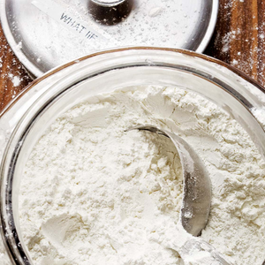

Gluten-Free Flour

24 oz
white rice flour
7½ oz
brown rice flour
7 oz
potato starch
3 oz
tapioca starch
¾ oz
nonfat dry milk powder
From
America's Test Kitchen
1
Mix all ingredients and store, refrigerated, in an airtight container.